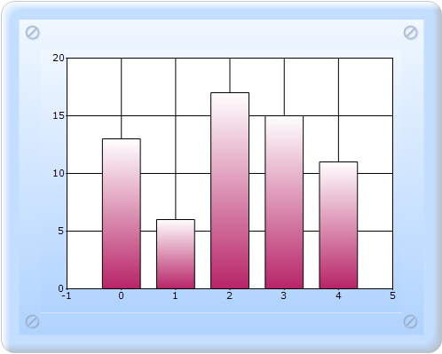

Syncfusion chart provides an option of binding the chart with IEnumerables, such as ArrayList for Indexed or Non-indexed model data by using ChartDataBindModel implementation.
The steps to bind the chart by using IEnumerables are as follows:
1. Create one Data in the cs page, as shown in the following code snippet.
public class PopulationData
{
private string city;
public string City
{
get { return city; }
set { city = value; }
}
private double population;
public double Population
{
get { return population; }
set { population = value; }
}
public PopulationData(string city, double population)
{
this.city = city;
this.population = population;
}
}
2. In Controller, create an instance for MVCChartModel, and set its properties.
3. Create the Series instance, and set the seriestype.
4. Bind the chart by using the following code snippet.
public ActionResult SimpleChart()
{
MVCChartModel chartModel = new MVCChartModel();
// Create chart series and add data points into it.
ArrayList populations = new ArrayList();
populations.Add(new PopulationData("New York", 13));
populations.Add(new PopulationData("Houston", 6));
populations.Add(new PopulationData("Tokyo", 17));
populations.Add(new PopulationData("London", 15));
populations.Add(new PopulationData("Los Angels", 11));
ChartSeries series = new ChartSeries("Populations");
ChartDataBindModel dataSeriesModel = new ChartDataBindModel(populations);
// If ChartDataBindModel.XName is empty or null, X value is the index of point.
//Here I have assigned the property name Population as the Y axis name and ChartDataBindModel automatically detects the Population property and will bind the data from it.
dataSeriesModel.YNames = new string[] { "Population" };
//Binding the ChartDataBindModel with the Series. This is the best practise for binding with a large amount of data since it will reduce the performance issue of Chart rendering and manipulating data.
series.SeriesModel = dataSeriesModel;
//Since we have specified YNames only for the DataBind model, it will take the data source in non indexed model and it will ignore the X axis values. We need to assign the X axis values what we need to show on X axis by ChartDataBindAxisLableModel separately.
ChartDataBindAxisLabelModel dataLabelsModel = new ChartDataBindAxisLabelModel(populations);
dataLabelsModel.LabelName = "City";
chartModel.Series.Add(series);
chartModel.PrimaryXAxis.LabelsImpl = dataLabelsModel;
chartModel.Skins = ChartModelSkins.Office2007Blue;
chartModel.ChartSeriesSkins = ChartSeriesSkins.Analog;
chartModel.BorderAppearance.SkinStyle = ChartBorderSkinStyle.Pinned;
chartModel.Size = new Size(500, 400);
ViewData.Model = chartModel;
return View();
}
5. In the View page, invoke the ChartBuilder by using the control ID as the first argument, and convert the ViewData to MVCChartModel and set it as the second argument.
View [ASPX]
<%= Html.Chart("SimpleChart",(MVCChartModel)ViewData.Model) %>
View [cshtml]
@(new HtmlString(Html.Chart("SimpleChart",(MVCChartModel)ViewData.Model).ToString()))
6. Run the code, to get the following output:

Figure 281: Custom Data Binding with IEnumerables